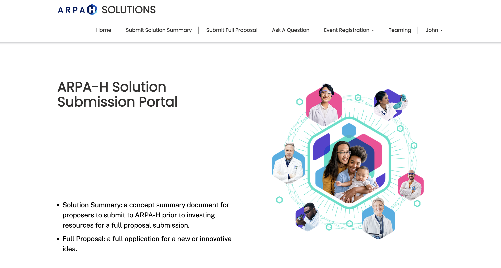
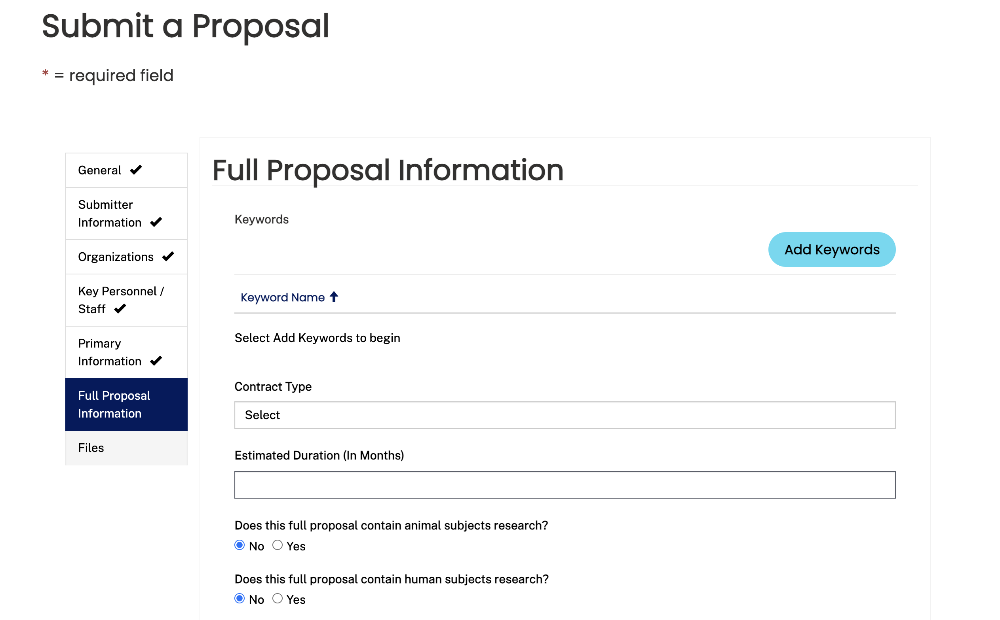
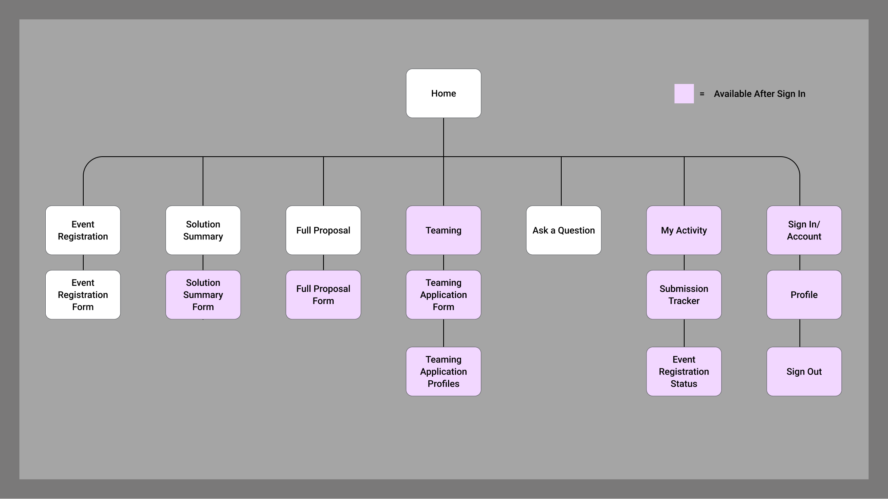
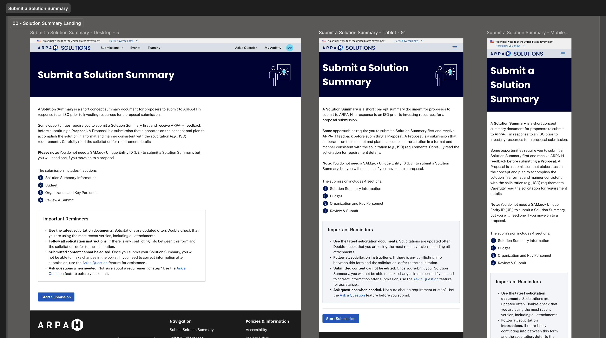
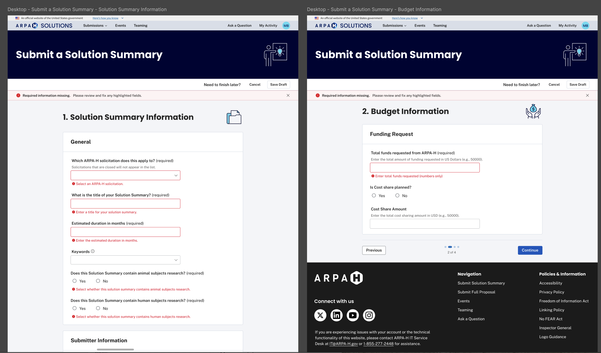
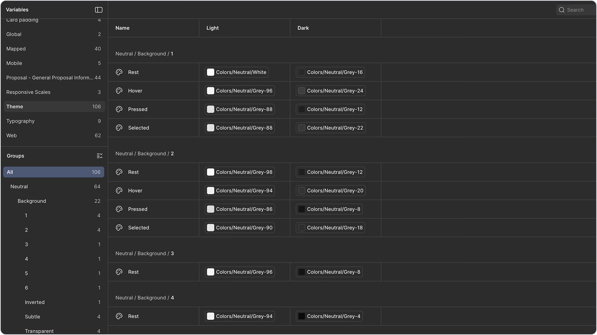
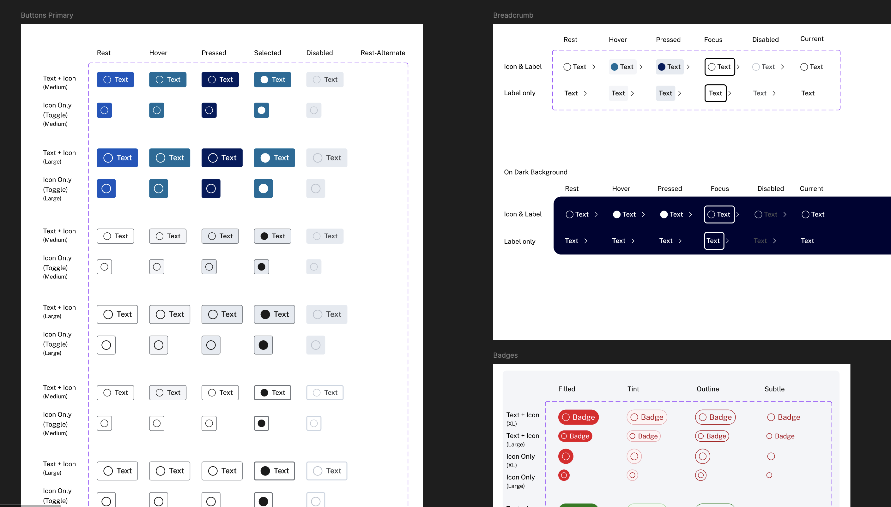
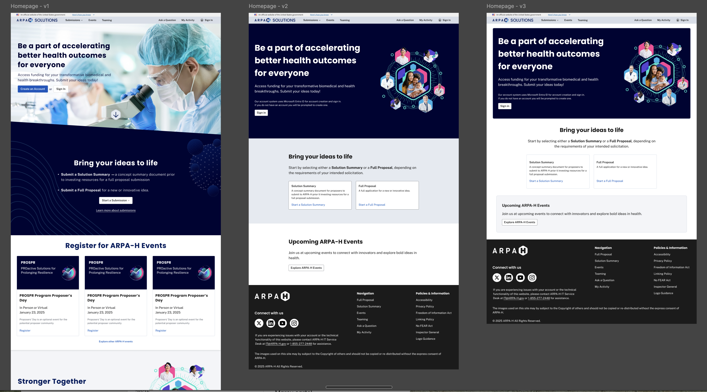

Selected Work
ARPA-H Solution Site
Designing a scalable platform where proposers submit health research proposals and register for ARPA-H events.

The Challenge
The existing ARPA-H solution submission process was creating issues for both applicants and internal teams. Analytics pointed to friction in key flows, and support tickets were mounting.
Dev leadership chose to rebuild the platform in Angular, and the UX team aligned on using Fluent UI components to create a more scalable and consistent experience.
The legacy experience
The site was built on Microsoft Power Pages. It got us live quickly, but it limited customization and conditional logic. As submission requirements became more complex, the platform started showing its constraints.


The legacy experience used long, linear forms with limited conditional logic, inconsistent terminology, and layout constraints.
Defining the Information Architecture
Before designing, I mapped the full sitemap. The product team and I had to get clear on what required sign-in and what didn’t. Events needed to be visible publicly, while submission workflows had to be gated behind authentication.

Mapping this early helped us align on entry points, access rules, and how submission types relate to each other.
Structuring the Submission Experience
Instead of one long form, I reorganized the submission into three clear steps to reduce cognitive load and create natural validation checkpoints.
1. General Proposal Information
Title, Solicitation, Mechanism, Phase, Topic, Proposal Uploads
2. Budget Details
Funding information, Budget Uploads
3. Key Organizations & Personnel
Primary organization, Sub-organizations, Point of Contact

The landing page set expectations up front and made the steps feel predictable across desktop, tablet, and mobile.
Key UX decisions
- Logical grouping: aligned sections to user mental models.
- Conditional logic: surfaced only relevant fields.
- Inline validation: plain-language error feedback.
- Reusable upload pattern: consistent file handling and messaging.

Inline validation patterns reduced ambiguity by clearly highlighting missing or incorrect information before submission.
Contributing to the Design System
I documented reusable patterns and contributed them back to our shared Figma library, so future features could be built more consistently and with less rework.
Atomic
Tokens, spacing, input states, button hierarchy
Molecular
File uploads, conditional sections, validation summaries
Organism
Solution Summary and Proposal workflows

Example of variable structure and token mapping used to support scalable theming and component reuse.

Component states documented across light and dark themes, including hover, focus, pressed, and disabled variants.
Refining the Homepage MVP
We started with a simple homepage MVP: clear entry points for submissions, plus a path for event registration. In theory it was straightforward. In practice, the homepage kept getting pulled in different directions as requirements shifted.
A few things drove that: development constraints, changes in what needed to be emphasized, and decisions landing later than we expected. Each time one of those changed, we had to revisit layout, hierarchy, and calls to action. It created a lot of rework, and that rework pushed the release further out.
The upside is that the iterations forced sharper decisions: what’s primary, what’s secondary, and what should be visible before sign-in. By the end, the homepage was cleaner and more intentional, even though it took longer to get there.

Homepage iterations showing how the MVP evolved as requirements and build constraints changed.
Impact
The redesign had not launched prior to my departure, so long-term user metrics weren’t captured. Even so, the work established a scalable structural foundation for future submission types without requiring redesign of core workflows.
- Standardized submission structure
- Clearer terminology and validation patterns
- Reusable design components aligned to Angular rebuild
Reflection
The biggest lesson for me was how quickly rework compounds when requirements are still moving. When decisions land late, even “small” homepage changes ripple into navigation, content, and component behavior.
If I could do it again, I’d push harder for earlier alignment on homepage priorities and define “done” more tightly for the MVP. It would’ve protected the team from churn and made handoffs smoother.